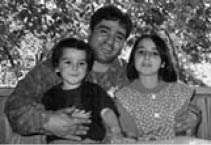
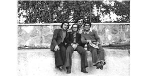

“12 Eylül Zindanlarından Kurtulanların Çok Uzun Yaşayacağını Düşünmüştüm.”
12 Eylül Darbesi sonrasında en büyük ağabeyim Bahri Özbey tutuklandı. Ankara Devrimci-Yol ana davasından yargılandı ve Mamak Cezaevi’nde 2.5 yıl yattı. İçeri girdiğinde 22 yaşındaydı.
Darbeden Önceki Hayat
Benim ailem Ağrılı. Babam ağa çocuğu, ağalığı reddetmiş ve Ankara’ya gelmiş bir insandı. Annem ev kadınıydı. Biz 5 kardeşiz, Bahri ağabeyim en büyüğümüzdü. Hem okuyordu hem de bir esnafın yanında çalışıyordu. 1980 öncesi herkes siyasete dahildi bir biçimde. Babam, biraz da ağabeyimin ilişkileri nedeniyle, DİSK’te işyeri temsilciliği yapmıştı. O zaman Kredi Yurtlar Kurumu’nda çalışıyordu.
1980 öncesi evimize gelen gidenler açısından oldukça hareketli bir dönemdi. Sohbetlerimiz çok keyifliydi. Neşeli bir ailemiz vardı. Biraz da babamdan kaynaklıydı, çok keyifli bir insandı. Büyük, 12 kişilik bir masamız vardı. Herkesin oturduğu sandalye belliydi. Ağabeyim her gün işe gitmeden önce herkesin harçlığını tabağının kenarına koyar, çıkardı.
Biz solculuğu ailemizden, annemizin, babamızın tavrından öğrendik. Devrimciliği, neden devrimci olmak gerektiğini ağabeyimden öğrendik. Herkese eşit hakkı neyse onu verirdi. Senin duymak istediğini değil, olması gerekeni söylerdi. Çok emek verdi hepimize, belki de o yüzden çok seviyoruz, sayıyoruz ayrıca. Hepimizin üstünde babalık hakkı vardır çünkü. Hep çalıştı hem devrimcilik yaptı hem aileye baktı.
Tartışmalarımız bile farklıydı bizim. Mesela çok iyi hatırlıyorum Ulaş Bardakçı’nın ölüm yıldönümünde yürüyüş düzenlenmişti, meşalelerle Altındağ’ın tepesine Ulaş’ın ismi yazılmıştı. Bahri ağabeyim, o yürüyüşte küçük ağabeyimi Kurtuluş’un kortejinde görmüş. Eve büyük bir hışımla gelmişti. Şimdi komik geliyor tabii. Çığlık çığlığa bağırmıştı: “Senin ne işin var Kurtuluş’un kortejinde, Kurtuluş’un kortejinde görmeyeceğim bir daha seni, yürüyeceksen Devrimci-Yol kortejinde yürüyeceksin!” Tartışmaysa böyle tartışmalar olurdu. Ama 12 Eylül’den sonra bunların hepsi bitti.
Darbeden sonra çok anlatılmıştır, “çocuklarımızı sokağa bile çıkaramıyorduk, kafamızı bile uzatamıyorduk.” Biz gece yarılarına kadar sokaklarda çok rahat oynardık. Ankara Telsizler’de oturuyorduk, hani eski deyimiyle kurtarılmış bölgeydi. Devrimci ağabeylerin bölgesiydi. Sokakta en ufak bir durum olsa bizimkilerin müdahale edeceğini bilmenin rahatlığıyla yaşardık. Bizim apartmanda başka siyasetlerden kişiler de vardı. Birinci kattaki ağabeyimiz, Devrimci-Yol davasından yargılanıyordu, işkencede sakat kalmıştı.
Ağabeyimi Alıyorlar
Bize, operasyon olduğu ve ağabeyimin içeri alındığı haberi geldi. İşyerine gelip götürmüşler. Nerede olduğunu söylemiyorlar. Uzun bir zaman geçmişti bulmamız için. Bu haberin ertesinde, üç kardeş sabah kalktığımızda balkonda babamı saçları bembeyaz bulmuştuk. Ben onu hayatım boyunca hiç unutmam. Eskiden hep Türk filmlerinde olur sanırdım böyle şeyleri. İmkânsız ve komik gelirdi, bununla dalga geçerdik. Sonra gerçekten bunun olabildiğini gördüm gözlerimle. Babamın simsiyah, dalga dalga saçları vardı ve biz sabah kalktığımızda saçları bembeyazdı. Anlatması çok zor.
Ağabeyimi 12 Eylül Darbesi’nden 15 gün önce içeri alındı. En kötü yanı belki de bu. O, 1. Şube’deyken darbe oldu. Bir aya yakın şubede kaldı. O içerideyken darbe olunca olağanüstü bir korku kaplamıştı evin içini. Annemin “Eyvah çocuklarımızı öldürecekler!” çığlığından sonra çok uzun zaman hiç ses çıkmadı evin içinde. Ne yapacağımızı bilemedik, ne şubeye gitme şansımız vardı ne görüşme ne de sokağa çıkma şansımız var. Kimseye ulaşamıyorduk.
O zaman örgüt üyesi olma suçuyla yakalanmıştı. Üzerinden silah çıkmıştı. Bu silahla adam öldürme suçu işlediği gibi bir dolu şeyle suçlanmıştı. Gerçekliği olan bir suçlama değildi.
Son derece gergin bir süreçti. Bizim evde gülmek yasaklanmıştı. Kardeşimin ve benim çizgi film seyrederken bile gülmemiz yasaktı. “İçeride onca insan var, çocuklarımız var, ne oldukları belli değil, nasıl gülüyorsunuz?” diye azarlandık annem tarafından. Biz uzun süre gülmeyi unutmuştuk evde.
Altındağ Tiyatrosu’na çok yakın oturuyorduk. Eskiden bize memleketten ya da başka yerden gelen insanları tiyatroya götürmek bizim için en büyük gezmeydi. Bilirdik ki, o sol kültür, devrimci kültürden öğrendiğimiz bir şeydi. Misafirlere böyle bir şeyi öğretmiş olmak bize çocuk aklımızla da çok güzel gelirdi. Çok mutlu olurduk ama bıçak gibi kesildi bunların hepsi. Sokağa çıkmak, sokakta oynamak... birileriyle karşılacaksın, birileri sana soracak, kim olduğunu bilecek. Eskiden bilirdik ki orayı ağabeyler koruyor, orada senin başına bir şey gelmez. İstediğin zaman, istediğin saatte sokağa çıkabilirsin. O güven duygusu kalmamıştı tabii.
Ağabeyim Ankara 1. Şube’de
Ailem, Ağrı’da köklü bir aileden geldiği için o kanallarla tanıştıkları insanlar vardı. 1. Şube’den bir komisere ulaşmışlardı. Babam, ağabeyimi görmeye gidebilsin diye ikna etmişlerdi. Babam eve geldiğinde anlatmıştı gördüklerini. Gidiyor görüşe, tabii ağabeyimin ellerinde ve ayaklarında zincirler var. Babam onu görünce dayanamıyor ve ağlamaya başlıyor (ağlıyor). Bunun üzerine ağabeyim slogan atıyor: “Biz onurlu bir iş yaptığımız için buradayız, bunların yanında ağlamamalısın. Başınız hep dik dursun, biz her zaman iyi şeyler yaptık ve iyi şeyler yaptığımız için buradayız.” Ağabeyim bağırınca döverek götürüyorlar kendisini. Sonra babam gelip bunu anlattığında, “Ben hiç olmazsa 5 dakika görmeliydim, ne derlerse desinler, keşke sussaydı!” dediğini hatırlıyorum.
12 Eylül Sabahı
12 Eylül sabahı babam kalkıp şubeye gidecekti. Çok erkendi kalktığımızda, dışarıya baktık ve dışarıda her adım başı bir asker ve bir polis olduğunu gördük. Bütün sokak ablukaya alınmıştı. Olağanüstü bir durum olduğunu anladık. O sırada apartmandan bir arkadaş geldi, “Darbe olmuş” dedi. Babam radyoyu açtı, annem “Eyvah çocuklarımızı öldürecekler” diye dövünmeye başladı. Biz küçük ağabeyimle birbirimizin gözlerinin içine baktık. Çünkü evde bildiriler ve kuşlamalar vardı, bizim de hazırlamaya yardımcı olduğumuz kuşlamalar. Evde arama olacağını bildiğimiz için, bir çözüm yolu düşündük. Babam hemen evi, kitapları toplamaya başladı. Evde Devrimci-Yol dergileri vardı. “Baba, yapma, yakmayalım ne olursun, dokunma” diye ağlayarak yalvarmaya başladık. Küçük ağabeyim çok pratik zekâlıdır. Aklına bunları büyük, sağlam torbalara doldurup bizim apartmanın alt katındaki su kaynayan yere sallamak geldi. Kurtarabildiklerimizin hepsini öyle saklamıştık, ilk telaşımız böyle olmuştu.
Devrimci-Yol dergilerinin kalanını yaktık, yanan yumruklu yıldızları seyrettik. Sonra bildirilerin ziyan olmasına gönlümüz razı olmadı. Onları da okul çantamızın içine doldurduk. Yıldırım Beyazıt Lisesi’nin bahçesine attığımızı hatırlıyorum. Çocuk cehaleti işte, başka bir şey değil, cesaretle falan alakası yok. Annemler bu yaptıklarımızı fark etmemişti bile.
Polis apartmanı bastı. Çünkü apartmanda biz tek başımıza değildik, birçok solcu aile vardı. Hatta birileri kaçıyordu o sırada. Bizim apartmanlar yan yana blok şeklindedir. Biz çocuk olduğumuz için o blokların birbirinin içinden geçişleri bilirdik. Altta tünel gibi bir şey vardı. Birileri polisten kaçarken bizim apartmana girdi. Biz de ona yol göstermek için alttaki tünellerden geçmesini söyledik. Polisler, bu apartman zaten mimli bir apartman deyip bütün daireleri kolaçan ettiler. Kapıları çaldılar, evleri bastılar. Üstümüzde faşistler oturuyordu ama ağabeyim onların oğluna, “Bu sadece işine gidiyor geliyor, dokunmayın” diye mahallede arka çıktığı için o gün hiç seslerini çıkarmamışlardı.
Sürekli şunu yaşıyorsun; gece kapın çalınacak, kötü bir haber alacaksın, başka bir şey olacak, birini daha götürecekler, annemi götürecekler... Çünkü insanları konuşturmak için ailelerindeki birçok kişiyi de gözaltına alıp onlara da işkence yaptıklarını çok duyduğumuz için hep tetikte bekliyorsun, yarım uykuda, tavşan uykusunda...
Görüşlere Gidiyoruz
Her salı günü görüşe gidileceği zaman evdeki o seremoni... Sabah erkenden kalkılır, evde bir telaş, sokağa çıkma yasağı var, bizler okula gideceğiz bir taraftan, babam izin alamaz. Sürekli takip ediliriz, ev basılır ama hiçbir zaman da hiçbir komşumuza annem, ben gezmeye gidiyorum ya da bir işim var dememiştir. Doğrudan, “Oğlumu ziyarete gidiyorum, çocuklarımı ziyarete gidiyorum” demiştir. O dönem Mamak’ın en kötü dönemleriydi. Raci Tetik’in bulunduğu, DAL’ın çok yoğun olduğu bir dönemdi. Ayı Kemal diye anılan vatandaşın olduğu dönemdi. Ben Raci Tetik dendiğinde sandalyenin üstüne çıkmış ve birilerini döven bir adamı hatırlardım. Hâlâ şu anda bile gözümün önüne gelir. Raci Tetik çok kısa boylu bir adamdı ama ona rağmen sandalyenin üzerine çıkıp insanları dövebilirdi. Çünkü insanlar hazır hale getirilirdi, onun dövebileceği kıvama getirilirdi.
Bir gün gittiğinde göremeyeceksin korkusuyla gidiyorsun. Çok bağırman gerekiyor. Çok yorucu bir süreç, saat sabahın 4’ünde yollara düşüyorsun Mamak’a gidebilmek için. Bir sürü arama noktasından geçiyorsun, cezaevine varıyorsun. 1. Nizamiye, 2. Nizamiye. Her salı gittiğinde görüşme şansın da yok zaten. İçerde açlık grevleri oluyor hemen görüş yasağı geliyor. Mamak da şimdiki Mamak değil. O zaman kar altında soğuk, rüzgârın sesi hâlâ kulağımı tırmalar, bir sürü kapıdan geçersin, her kapıda vücuduna dokunurlar. O yüzden 1 Mayıslara gittiğimde bile polisin beni arayacak olmasının telaşı günler öncesinden sarar beni. Herkes sana dokunur, ayaklarının içine, çoraplarına kadar her yerine bakar. İçeri girersin, ya görüşeceksindir ya görüşmeyeceksindir.
Hiç unutmuyorum “hoş geldin kafesleri” vardı Mamak’ta. Bunlar resmen demir kafeslerdi. İlk gelenleri ve ağır işkenceden geçmiş olanları oraya atmış olurlar ve siz içeri girdiğinizde görürsünüz onları. Ağabeyimi hiç görmedim orada ama diğer ağabeylerimizi gördük.
Sonra görüş yerine girerdik. Açık görüş mümkün değil. Görüş yeri 1 metreden daha dar, yan yana 8-10 tane. Aranızda en az 2.5 metre var. Önümüzden bir tel geçiyor. O tele dokunamazsınız, karşınızda cam, tutukluların olduğu tarafta da aynı şekilde. Onun başında bir asker, sizin başınızda bir asker. Konuştuklarınız kesinlikle dinleniyor, farklı bir şey söylendiğinde zaten karşınızdakiler tekme tokat alınıp götürülüyorlar. En çok şu dikkatimi çekmişti. Kürt anneleri gelirdi, onlar hiç Türkçe bilmezlerdi ve hiç konuşamazlardı, yasaktı çünkü. Sadece seyretmiş ve görmüş oluyorlardı.
Bir keresinde asker, küçük kız kardeşimin telin arkasından geçip cama dokunmasına izin vermişti, mesela o günlerce konuşulmuştu. Sanki ona dokunuyormuşsun gibi... Oysa ki hiçbir fark yok.
Yine böyle bir görüş günü gitmiştik. Tabii oradaki herkes ağabeyim kadar şanslı değildi. Türkiye’nin birçok yerinden aileleri gelemeyen yığınla insan vardı içeride. O yüzden içeriden sadece ağabeyimin kıyafetleri gelmezdi, bütün arkadaşlarının kıyafetleri gelirdi yıkansın diye. Bir kez yine Mamak’a gittiğimizde görüşe izin vermediler. “Görüş yasağı var, açlık grevinde sizinkiler. Görüşmeyecekler, içeride de rahat durmuyorlar!” deyip kanlı gömlekler attılar önümüze. Uzun süre de haber alamamıştık. Mesela o kanlı gömleklerin hikâyesini çok sonra anlatmıştı ağabeyim. İçerde köpeklerle saldırmışlar üstlerine. O yüzden asla yeşil renkli bir şey içeri alınmazdı. Çünkü köpekler ona eğitimliydiler. Yeşil görünen hiçbir şeye saldırmıyorlardı, o nedenle çarşaf dahil hiçbir şeyi yeşil kabul etmiyorlardı. O zamandan babamın alıp da ağabeyime veremediği yeşil renk çarşaf hâlâ durur bende.
Açlık grevlerinden sonra uzun zaman görüş yapılamadı. Görüş yapamıyoruz, içeriden haber alamıyoruz. Biz bir şey yapamadığımız gibi avukatlar da hiçbir şey yapamıyorlar. Bir aya yakın haber alamadık. Sonra ertesi hafta tekrar gittik. İsim verdik, şu kişinin yakınıyız diye. “Burada öyle birisi kalmıyor, böyle biri hiç gelmedi” dediler. Benim babam çok güçlü bir insandı, çok dirayetliydi, çok badireler atlatmıştı ama ben ilk defa onun yığılıp kaldığını hatırlıyorum. Hiç sesini çıkarmadan öylece yığıldı ve annemle ikisi “Öldürdüler!” diyebildiler sadece. Sonra annem, Bahri ağabeyimin arkadaşı Burhan’ı soralım dedi. Burhan ağabeyinin ailesi Bursa’daydı. Onlar çok fazla gidip gelemiyorlardı. Sorduk, onun için de aynı cevabı verdiler. Bunun üzerine küçük ağabeyim bağırmaya başladı: “Biz aylardır buraya görüşe geliyoruz, bu insanları görüyoruz, nasıl böyle bir şey söylersiniz, nasıl burada olmazlar?” O anda annemin ona sarılıp onu da alacaklar korkusuyla ağzını kapattığını hatırlıyorum. Babamın oğlumdan bir ses, bir haber gelir mi diye elindeki son parayla aldığı arsasını ve evini satıp bazı savcılara yedirdiğini duymuştum. Annem en çok ona hayıflanırdı, çocuk çıkmadı, para da gitti diye. O yüzden Ankara’da Batıkent’e her gidişimde içim sızlar. Bizim de şimdi orada bir evimiz olabilirdi diye düşünürüm hâlâ. İnsanlar emeklerini heba ettiler çocuklarını kurtarmak için. Görüşe gitmek için izin alamadığından işini bırakmak zorunda kalan bir dolu insan vardı. Azımsanacak şeyler değildi bunlar.
Tamamen kayıp, kaybedildi diye düşünüyorsun. Biz içeri alındığını, orada olduğunu biliyoruz. Ama insanları Mamak’tan alıp tekrar şubeye götürdüklerini de duyuyorduk. Birisi yakalanıyor, isim veriyor bunun üzerine tekrar şubeye getiriyorlar. Biz de bunu düşünerek tekrar 1. Şube’ye gittik, araştırdık, orada olduklarını öğrendik ama bunun için tazyikli su yediğimizi hatırlıyorum.
Açlık grevi sürecinden sonra resmen dışarıdakilere de baskı yapmaya çalıştılar. Fakat ne yapmış olurlarsa olsunlar, hiçbir aile çocuklarından vazgeçmedi.
O dönemde en güzel şey şuydu aslında: tüm yaşanılanlara rağmen evimize çok ziyaretçi gelirdi moral vermek için. Mesela bir ağabeyimiz vardı, tabii bu isimleri hiç hatırlamıyorum. Çünkü bunları hafızamızdan silmemiz söylenirdi, “Benim 3 kardeşim idamdan yargılanıyor, hiçbir şey olmaz, bunlar da geçecek” diye anneme moral verdiğini hatırlıyorum.
Çaresizlik, bir şey yapamamak çok kötü bir şey. Ben Mamak’ta en çok bunu fark ettim. Hiçbir şey yapamıyorsun, elinden hiçbir şey gelmiyor. En fazla yapabildiğin, aileler olarak bir arada durmak. Mesela İbrahim Çiftçi’nin ailesi falan da gelirdi ama ülkücülerin aileleri hep tek başlarınaydı. O zaman bile bunu fark ederdik, annem mesela şey derdi: “Bu bile farklı, Mamak kapısında çocuklarımızı beklerken bile bir farkımız var bizim. Biz bir aradayız, hep beraberiz ama onlar hep yalnız. Onlar hep kendi çocukları için var ama biz bütün çocuklarımız için buradayız” derdi. O zaman ülkücülerden de çok fazla insan vardı içeride. Ama nedense hep bizimkileri dayak yerken görürdük.
Bahri ağabeyimin olağanüstü desteği vardı bizim evimize, bizim hayatımıza. Tabii ki ondan sonra ekonomik olarak da çok yalpaladık. Çok su sattık, pazarcılık yaptık pazarlarda. Eskiden Ankara’da vardı, buralarda da var mıydı bilmiyorum, tornetimiz vardı bizim. Pazar alışverişini yapanların eşyaların, para karşılığında taşırdık pazara gidip. Yoksa biz de diğer çocuklarla beraber top oynamak, seksek oynamak yerine niye su satalım.
Aile İçi Tepkiler
Benim babamın ailesinin hepsi MHP’li faşist olduğu için tam bu dönemde o taraftan da bir baskı vardı. Babamın akrabalarıyla o döneme kadar görüşüyorduk ama Bahri ağabeyim cezaevine girdikten sonra aile içinde yaşadıklarımızdan dolayı görüşmeyi bıraktık. Söz konusu bir erkek çocuğu, feodal bir aile, ağabeyimin idamla yargılanacağı söyleniyor ve bunun üzerine babama da “Çocuk niye böyle oldu, bunun hesabını vermeli birileri” diyorlar. Bir anlamda annemin ailesini suçluyorlar. Biz böyle süreçlerde dik durmayı biraz da annemizden, babamızdan öğrendik aslında. O zaman ben, annemin sobanın yanı başında ellerini başına alıp “Ölürse ölür, benim de bir oğlum bu yolda ölür derim, hiç olmazsa arkadaşları her yıl mezara ziyarete gelir, Deniz Gezmişlerden, Mahirlerden daha mı değerli benim oğlum?” dediğini hatırlıyorum.
Ülkücülerin davasından yatan bir akrabamız vardı, amcamın oğlu, ağabeyimin görüşüne gitmek istedi ısrarla, biz gitmesini istemedik ama ısrar etti, “Bizim için böyle şeyler olamaz, biz sonuçta akrabayız” dedi. Ağabeyim onun görüşüne çıkmamıştı. Çok büyük olay olmuştu ailede, “Vay efendim nasıl olur, bizim çocuklar birbiriyle görüşmez” diye. Bize çok sık gelir, giderlerdi. Babam ailenin büyüğü olduğu için ve Ankara merkez olduğu için, o dönem herkesin işi düşer ya, o nedenle gelirler, görüşülürdü. Tatlı bir çekişmeleri vardı o zaman. Hatta “Üstünde silahla yakalanmış, ne diyorsunuz?” dediklerinde babam: “Bahri’nin daha bir kişiyle kavga ettiğini görmedim ben, ne silahından bahsediyorsunuz” diye tepki göstermişti. Ee tabii ki o dönemdeki anti-faşist mücadelenin içinde silah da gerekiyordu. Faşistler saldırıyor, devrimciler de direniyordu. Öyle bir dönemdi. Doğal olarak akrabalarla ilişkilerimiz kalmadı. Onlarla uzun süre görüşmedik. Hatta ağabeyim cezaevinden çıktıktan sonra, o konu daha da sert olmuştu. Hiç görüşmediğimizi hatırlıyorum.
Babamın akrabaları bizi çok zorlamıştır. Bize “N’aber komünistler!” diye seslenirlerdi. Bir gün eve hışımla geldiğimi hatırlıyorum, babama “Kardeşinin çocuklarına bir şey söyle, sokakta bize n’aber komünistler diye sesleniyorlar” diye feryat etmiştim. Babam bütün aileyi toplayıp herkese ayağını denk almasını söylemişti. O zaman tabii ailenin büyüğü babam olduğu için bizimkilerde öyle küsmek diye bir şey olmazdı ama annem amcama dönüp “Ağabey, ben senin çocuklarına n’aber faşistler diyor muyum” dediğinde ilişkiler kopmuştu zaten. Feodal aile en nihayetinde “Nasıl olur da böyle bir şey söyler evin gelini bize” diye çok tartışmışlardı. Babam nasıl ses çıkarmaz ona diye sinirlenmişlerdi. Ondan sonra hiç görüşmedik. Şimdi de ailenin bir kısmıyla görüşüyoruz. Babamın ağabeyleri ve çocuklarıyla görüşmüyoruz. O eski yakınlık, sıcaklık yok. Onu hissetmiyorsun. Aramalarını da beklemiyorsun zaten. Dışarıdan insanlar gibi oluyorlar senin için.
Toplumun Tepkileri
“Aman sessiz olun, kimsenin yanında konuşmayın, evde konuşulanlar evde kalsın” demezlerdi pek bize. Bizim etrafımız daha politikti, belki o yüzden de saklanmadı. Annem daha çok babamın akrabalarıyla tartışmamamız konusunda uyarırdı.
Bir dönem Aydın’da yaşadık. O dönemde durumumuzu saklı tutmayı tercih ettik. Aydın daha küçük, daha bilmediğimiz bir yerdi. O zaman annem kimseyle konuşmamızı istemedi. Ben bir kitapçı keşfetmiştim. Oraya gider gelirdim. Annem benim oraya gidip geldiğimi öğrendiğinde çok korkmuştu. “Bir şey anlatma, kimseye bir şey söyleme!” demişti.
Ankara da ağabeyim alındıktan sonra bizimle ilişkilerini tamamen kesen komşularımız oldu. Bolulu bir komşumuz vardı, bize birinin geldiğini ya da kapıyı çaldığını duyduklarında hışımla kapılarını kapatırlardı. Hiçbir şey yapmazlardı, bizimle konuşmazlardı. Çocukları bile bizimle oynamazlardı mesela.
Bizim blokun arkasındaki blokta bir aile otururdu. O iki kız kardeş ve anneleri Mamak’a gidip gelirdi. Ağabeyim haber göndermişti Aslan’ın ailesiyle bir daha görüşmeyeceksiniz diye. Böyle durumlar da oldu. Hatta bizim evimize gelip çok uzun süre kalan birisinin polis olduğunu öğrenmiştik. Ağabeyimin arkadaşlarındandı, odunumuzu taşımaya bile yardım etmişti. Sivil polismiş. Ağabeyimin yakalanmasına sebep olup olmadığını bilmiyoruz. Hiç konuşmadık. Cezaevi sürecinde öğrendik onun polis olduğunu. O dönem çok kalabalık kitleler içerisinde böyle şeylerin olması normaldi.
Okul
Okuldasın ve her salı devamsızlık yapıyorsun. Bir arkadaşım bunu fark etmişti. “Neden sen hiç salıları gelmiyorsun” diye sormuştu. Ben o zaman çok paniğe kapılmıştım, ne diyeceğim şimdi, ya anlarsa falan diye. Panikle “Yook, ne alakası var!” dediğimi hatırlıyorum. Hiç kimseye söylemezdik, her salı izin alırdık okuldan ama hiç kimse de bizim görüşe gittiğimizi bilmezdi. Ama apartmanda böyle şeyler yaşamazdık. Bilirdi ki Zühre Teyze, babamlar, annemler görüşe gitmişler, biz balkonda ya da dışarıdayız. Okulda bu mümkün değildi. Çünkü Yıldırım Beyazıt Lisesi, direnişleriyle bilinen, meşhur bir liseydi. Dolayısıyla darbe sonrası öğretmenlerin yarısından fazlası alınmıştı zaten. Alınmayanlar da bütün kinini kusmaya başlamıştı. Hepsi asker, bildiğin subay gibi davranıyorlardı. Dağıstanlı diye bir öğretmen vardı mesela, adam terör estiriyordu resmen. Özellikle fırsat kollardı bizim gibi bilinen ailelerin çocuklarını koridorlarda dövmek için. Artık bir askeri darbe olduğu, herkese haddinin bildirileceği, herkesin yaptıklarının sonucuna katlanacağı şeklinde bize gözdağı veriyorlardı. Yaptınız ama artık güç bizde, bunların hepsinin bedelini ödeteceğiz, göreceksiniz... Böyle bir hava vardı. Mesela eskiden liselerin, okulların etrafı çok güvenliydi. Çünkü o zaman orası devrimcilerin bölgesiydi ve hiç kimse olumsuz bir şey için oralarda bulunamazdı. Ama yılı dolmadan Yıldırım Beyazıt Lisesi’nin önünde hapçılar türemeye başlamıştı. Çünkü artık devrimciler yoktu, onlar da istedikleri gibi at oynatıyorlardı.
Yine de bunların hiçbirisi değil ama bizim kanımıza en çok şu dokunmuştu: Altındağ bölgesinde devrimcilerin çok büyük emeği vardır. Oradaki insanlara ihtiyaçları olduğunda odun, kömür taşımışlardı. Bu hikâyelerle büyümüştük biz. 12 Eylül Anayasası’nın oylanmasında en çok “evet” Altındağ bölgesinden çıktı mesela. Ben çok uzun süre gitmek istememişimdir oraya. Böyle şeylere kızıyorsun tabii. O insanların hiçbirinin o evler tarafından hatırlanmaması çok acı bir şey.
Canımı En Çok Acıtanlar
Babam “Bugün Bahrileri bırakacaklar, almaya gidiyorum” demişti. Hepimiz ağabeyimi nasıl karşılayalım diye evde telaşa kapılmıştık. Annem hariç... Hiçbir şey yapmıyordu, “Anne ağabeyimler gelecekler, bir şey yapmayacak mıyız?” dediğimde; “Hiç umutlanmayın, bırakmayacaklar çocuklarımızı” demişti. Gerçekten de gelmediler. Tahliye edildiği söylenmiş. Ama bir taraftan tahliye edip eğer yakınınız, bir takip edeniniz yoksa öbür taraftan tekrar içeri alıyorlar. Bir akrabamızla babamın “Bir daha Bahri’yi göremeyeceğiz!” diye eve yıkılmış bir vaziyette geldiklerini hatırlıyorum. Bir hafta geçti aradan tekrar gittiler görüşe, tekrar “Tahliye olacak” diye haber geldi. Ben o gün Zühre Teyzelerde yemek yiyordum. Yerde sofra kurulmuş. Zühre Teyze beni sevmeye başladı. Çorba koymuştu hiç unutmuyorum, gözümdeki yaşlar çorbanın içine akıyordu, Zühre Teyze “Yapma böyle, birazdan Bahri gelecek, seni böyle görmesin” dedi. Küçük ağabeyim ve ben dedik ki “O gelmeyecek Zühre Teyze, bizi kandırıyorlar, gelmeyecek. Bir daha görmeyeceğiz.” Sonra kapı çaldı ve ağabeyin geldi dendi. Apartmandaki diğer solcu ailelerle o an yaşadığımız korkunç bir sevinçti, fırladık, divanların üstünden koştuk, yukarı kata çıktık, kapıyı açtık, o kadar sakin, o kadar rahattı ki gelen arkadaşlar, şoke olduk. Hiçbir şey olmamış, akşam işten dönüyorlarmış gibiydiler. O kadar sükûnetle geldiler. Annem önce ağabeyimin arkadaşı Burhan ağabeye sarıldı, onu kucakladı, öptü. Ben eğildim “Anne neden önce ağabeyimi öpmüyorsun?” dedim. “Biz hepimiz buradayız, onun kimsesi yok, ondan” dedi. Oturdular ama hiçbir şey anlatmadılar. Hiçbir şey. Bunlar çocukluğumda beni çok etkilemiş şeylerdir.
Ağabeyim Çıktıktan Sonra
Kaldığımız yerden devam edemedik tabii ki. O zaman şöyle bir şey oldu mesela, dışarıdasınız ve dışarıda eski bıraktığınız hayatı, mücadeleyi hiçbir şeyi devam ettiremiyorsunuz. İçerde arkadaşlarınız var, onları bırakıp çıkmışsınız. Onlar için hiçbir şey yapamıyorsunuz. O dönem bu acıları çok yaşadı ağabeyim. Onun vicdan azabını çok yaşadı. “İçeride bunca insan var, biz buradayız. Onlar şu an kim bilir ne yaşıyorlar, ne yapıyorlar, ne yiyorlar, ne içiyorlar?” diye sorguladı sürekli. Bu dönemi atlatması çok zor oldu. Taa yıllar yıllar sonra ben evlenip çoluk çocuğa karıştıktan sonra ancak anlatabildi mesela kanlı gömleğin hikâyesini. İşkenceleri hiç anlatamadı.
Kalabalık bir aile olduğumuz için biz çocuklar, ranzalarda yatardık. Ağabeyim içeriden çıkınca ranzalar söküldü. Çünkü asla onlara yatamadı. Uzun bir süre cam bardaklarda çay içmeyi, su içmeyi reddetti, “Arkadaşlarım içeride, plastik bardaklarda, metal bardaklarda içiyorlarken ben nasıl içeyim bunları” dedi. Sadece ağabeyim değildi bunları yaşayan. Onun arkadaşlarıyla ilgili de çok kötü anlar yaşadık. ODTÜ’lü Yalçın ağabeyimiz vardı. Bakkalda karşılaşmıştık biz onunla ve bakkalın buzdolabından yoğurt vermesini rica etmiştik: “Şu arkadan gir de dolaptan yoğurdu veriver Yalçın ağabey” demiştik. Dolabın önüne gidip donup kaldığını hatırlıyorum ben. “Yalçın ağabey, haydi yoğurdu versene!” dedim. Döndü, “Ben 7 yıl böyle bir hücrede kaldım, biliyor musunuz?” dedi sadece. Ve o dolaba elini süremedi, o yoğurdu veremedi. Böyle travmalar yaşayan o kadar çok insan vardı ki... Ağabeyimin cezaevi arkadaşlarından birinin kızı uzun bir süre, kendisine baba demedi, bir yabancı gibi davrandı ona. Kızı doğduğunda kendisi içeride, eşi de kaçaktı.
Ben o dönemi yaşayan herkesin, küçük kahramanlar olduklarını düşünüyorum. Bazen kendimi düşünüyorum da ben onca işkenceye dayanır mıydım, ne yapardım acaba diye ya da neydi onları işkencelerde o kadar dik, o kadar onurlu tutan şey? Belki de sağlam ilişkileri ve inandıkları şeylerdi. Mesela bir arkadaşım şöyle demişti: “Bana işkence yaptıklarında işkenceden önce gözlerinin içine bakabildiğim arkadaşlarımın gözlerinin içine bir kez daha bakabilmek için direndim, sadece onları ve gözlerini düşündüm, o yüzden dayanabildim aylarca.” Ben ağabeyime kendine iyi

Bahri Özbey çocuklarıyla birlikte
bak dediğimde, “Ben Filistin askısında uyumuş adamım bana bi şey olmaz” derdi.
Çocukluğumdan bana kalan, hiç gözümün önünden gitmeyen babamın kırlarmış saçları, annemin sobanın dibinde ağlaması, Raci Tetik’in sandalyenin üstünde insanları dövüşü, kafeslerdeki insanların gözünün içine bakamamak, kanlı gömleklere sarılıp ağlamak, hep kaybetme korkusudur. Ağabeyim yoğun bakımdayken ona hep şöyle dedim: “Sen çok badireler atlattın, çok işkenceler gördün, hiç teslim olmadın.” Cezaevlerinden sağ çıkanlar için de öyle düşünmüştüm (ağlıyor), onlar ölüme kolay kolay yenilmezler, teslim olmazlar demiştim. Ben o yüzden 12 Eylül zindanlarından kurtulmuş insanların çok uzun süre yaşayacağını düşünmüştüm çocukken. Bunlar buradan kurtulabildilerse daha çok yaşarlar diyordum. Onlara bir şey olacağı hiç aklıma gelmiyordu. Oysaki koskoca bir 12 Eylül silindir gibi geçmişti. Hepsinin bedenini çok fazla yıpratmıştı. Ağabeyimi 2012’de beyin kanamasından kaybettik. Ardında iki kızı kaldı, biri öğretmen, diğeri de öldüğü sene üniversite sınavına girmişti.
Hiçbir şey eskisi gibi olmuyor, hâlâ da değil. Belki de hiçbir zaman olmayacak. O zaman başka bir hayat vardı. Başka bir dünyamız vardı ama şimdi herkes bir yana savruldu. Hiçbir şey o zamanki kadar sahici değil, ne yaşadıklarımız ne yaşayacaklarımız. O nedenle o günden bugüne kadar kesintisiz devrimcilik yapmaya devam eden, solcu olmaya devam eden herkesin benim gönlümde, hayatımda bambaşka bir yeri vardır. O yüzden ben hep şunu demişimdir; onlardan yana ne gelecekse benim başım, gözüm üstünde yeri vardır. Çünkü biz her şeyi onlardan öğrendik, insan olmayı, iyi olmayı, doğru olmayı, dürüst olmayı, paylaşmayı...

Bahri Özbey arkadaşlarıyla
Psikolojik Destek
Profesyonel destek almadık. Çünkü anlatmamak birinci kuraldı. Susmak, anlatmamak... Biz Aydın’a gittiğimizde oradaki herkes beni suskunluğumla tarif ederdi. Ben hâlâ ilk karşılaştığım insanlarla ne konuşacağımı bilemem. Ne saklayacağını düşünürsün çünkü ilk önce. Psikolojik destek almadık ama belki de alınması gerekiyordu. Biz bu dönemi yıllarca birbirimizden ayrılmayarak atlattık. Hep beraber kaçtık, beraber gittik, beraber geldik. O yüzden belki biraz daha kolay oldu çalkantılarla mücadele etmek. Aradan yıllar geçip herkes evlenip başka bir şehre göçtüğünde en çok o dokunmuştu bize. Biz en zor zamanlarımızda bile ayrılmamıştık şimdi niye ayrı düştük diye sorgulamıştık. Hâlâ o güçlü aile bağlarımız devam ediyor.
Ağabeyime kızdığım bir an olmadı. Yalnızca yaşamış oldukları için üzülüyorum. Kimin aklına gelir bir kediyle bir insanı aynı torbanın içine koymak ya da yarım metrekarelik bir kutuya sığdırıp orada günlerce tutmak... Benim ailem de kızgın değildi onca şey yaşanmasına rağmen.
Umutsuz Değilim
Onca yaşananlara rağmen umutsuz değilim. Yaptıklarıyla kaldılar diye de düşünmüyorum. Hiç de öyle olmadı, öyle olmadığı için zaten ÖDP kurulduğunda çok heyecanlanmıştım. ÖDP’den öncesinde de hiç vazgeçmedik. Bizim için iki satır yazının bile çok önemi vardı, çok şey vaat ediyordu. Umutsuz olmak aynı zamanda 12 Eylül’ün yapmak istediğine hizmet etmek olacaktı. Onca yaşadığımızı sineye çekmek olurdu, biz böyle bir şey yapamazdık. Sizin istediğiniz gibi olsun, biz başaramadık demek, bu mücadelede kaybettiğimiz, acı çeken bir dolu insana da haksızlık olurdu. Hiç böyle bir şey geçirmedik aklımızdan. Annem son nefesine kadar “Yine ne varsa devrimcilerde var” demiştir. Ona sitem edip bunlar da hiç solculuktan vazgeçmiyor diyen bir kadına, “Onlar olmasaydı sen şu an iki ayağının üstünde gezemezdin bu sokaklarda, hâlâ gezebiliyorsan onlar sayesinde geziyorsun” diyebilen bir kadındı. Benim için de öyle. Çalışanlar ve tüm insanlar için, o dönem kazanılmış kazanımlar, haklar, o günden bugüne taşınan değerlerdir. Evet çok zor bir dönemden geçiyoruz. Özellikle son 10 yıl Türkiye için çok ağır bir dönem. Ama bu döneme rağmen hâlâ sokağa çıkan insanlar var, hep olacak ve bu mücadeleden vazgeçilmeyecek.
Bugünden Bakınca
Bu kadar sessiz kalınmasına, büyük şeyler görüp onlarla büyüyüp sonra küçücük insanlara kaldığımızda üzülmüyor değilim. Mesela kaç bin tane satıyordu Devrimci-Yol dergisi, şimdiki halimize bak diye çok hayıflandığım, üzüldüğüm zamanlar tabii ki oldu. Yaşanılan şeyler o kadar basit değil elbette. O durum herkesin içine öyle bir korku saldı ki, dönemi yaşayan insanlar da, onların çocukları da hâlâ o korkulardan kurtulmuş değil. O yüzden çok kınamamak lazım belki de ama tabii ki ara sıra sitem etmiyor da değiliz. İnsan kırılıyor, bunca şey yapılmışken bu kadar sessiz kalınmasına da üzülüyor.
Eskiden insan örgütlemek için belli başlı kitaplar vardı. Herkesin eline ilk önce o kitaplar tutuşturulur, kitapla örgütlenirdi insanlar. Ama şimdi öyle değil, şimdi rahat hayat sunma vaadiyle örgütleniyorlar. Tabii ki başka bir hayat var şu an, başka beklentiler var. Eskiden işçilerin zincirlerinden başka kaybedecek neyi var derdik, artık çok şeyleri var. Dolayısıyla devrimciliğin, sosyalizmin ne olduğunu bile bilmiyor insanlar. Birçoğu için sol demek CHP ya da sosyal demokratlar demek. O kadar. Çünkü başka bir şey bilmiyorlar. Belki de bizim hatamız bu. Biz anlatamadık, daha çok şey yapmak gerekiyordu. Devrimcileri niçin Çemberimde Gül Oya anlatsın? Şimdi TRT 1’de 80’ler diye bir dizi var. Bu diziyi gören bütün solcuların ayağa kalkması gerekir, o diziyi seyretmeye tahammül edemiyorum. Tüylerim diken diken oluyor. Aslında herkes birbiriyle kardeş gibi geçiniyordu da işte birileri geldi nifak tohumu ekti, vay efendim solcu çocuklarla kardeş kardeş geçinen ülkücü çocuklar kavga etti. Yok böyle bir hayat. Hiç böyle bir şey olmadı. Ülkücüler katletti, devrimciler de direndi. Bu kadar net, bunun başka bir açıklaması yok. Bir katliam yaşanırdı, karşısında devrimciler canı pahasına bu insanları korumaya çalışırlardı. Belki de hafızalardan silinmeye çalışılan bu. Tayyip Erdoğan’ın çıkıp da “Zaten bunlar Maraş’ta da birbirlerini öldürmüşler” demesindeki telaşı da bu. Çünkü insanlar hâlâ Maraş’ı, Sivas’ı andığında oradaki devrimcileri de anmış oluyor. Çünkü herkes biliyor ki, orada devrimciler olduğu için daha fazla kan akmadı. Bu hafızayı taze tutacak, bu tarihi diri tutacak, insanlara dönüp dönüp anlatacak kanallara ihtiyacımız var. Televizyon olur, medya olur, basın olur, bu proje olur, böyle şeylere çok ihtiyaç olduğunu düşünüyorum gerçekten de. Mesela ağabeyimin çocukları bu yaşadıklarını bilsin istiyorum. Niye Evrim’le Devrim bilmesinler bunları, bilsinler...
Eğer insana insan olduğu için değer veriliyorsa, hâlâ birileri için insanlar fedakârlıkta bulunabiliyorsa o günden bugüne yaşananların, sürdürülen mücadelenin büyük payı olduğunu düşünüyorum. Başımıza bir hal geldiğinde arkamızda, yanı başımızda birini bulabiliyorsak o günden bugüne taşınan mücadele hattının bir devamı olduğunu düşünüyorum. Bunların hiçbiri yoktan var edilmedi ki. Hep o dönemin bize bıraktığı mirasın üzerine inşa edildi. Sonuçta hani ot kökün üstünde büyür derler ya o dönem çok sağlam bir kök oluşturuldu ve şu anki yeşeren şey de o kökün üstünde bitiyor. Bize de biraz çabalayıp biraz sulamak, biraz daha fazla emek vermek kalıyor. Yoksa vazgeçme lüksümüz yok. En azından çocuklarımız, geçmişimiz, yaşadıklarımız, bunları yaşayanlar ve kaybettiklerimiz için yok. İyiden, güzelden yana ne öğrendiysek o yitip giden insanlardan öğrendik. Kendi çocuklarımıza öğretmek için de onların hayatlarını, yaşadıklarını, anılarını diri tutmak gerekiyor. O yüzden de bugün kazanılan, yürütülen mücadeleyi biz oradan öğrendik ve bu öğrendiklerimizi öğreterek devam edeceğiz. Az ya da çok devam edeceğiz. Öbür türlüsü teslim olmak olur, o da bize yakışmaz herhalde.
12 Eylül Davası
Bana bir komedi filmi gibi geliyor. Benim için hiçbir anlamı yok. Yargılanmayacaklarını, bu davanın iktidarın politik manevrasının ötesinde bir şey olmadığını düşünüyorum. 12 Eylül’ün siyasetini benimsemiş bir hükümetin 12 Eylül’ü yargılayacağını düşünmek kadar komik bir şey olabilir mi? 12 Eylül’den daha beter bir sivil diktatörlüğü hayata geçirmeye çalışan Tayyip Erdoğan da “paşam paşam” diye söz ettiği birisini yargılamayacaktır. 80 yaşındaki insanları cezaevine atmakta beis görmeyen devlet, Kenan Evren’i bir türlü mahkeme koridorlarına getirmedi ama insanlar işkence tezgâhlarından çıkartılıp mahkemelerde yıllarca süründüler. Onun için bana çok anlamsız geliyor. Onun peşine düşmek de komik geliyor. 12 Eylül’ün, Kenan Evren’in, diğer paşaların, bu zihniyetin yargılanacağını düşünen insanların da, kusura bakmasınlar ama zavallı olduklarını düşünüyorum. Hiç kimse kendisini kandırmasın. 12 Eylül iki kişinin yargılanabileceği bir şey değil. Kenan Evren yargılansa ne olur, yargılanmasa ne olur, mesele sadece Kenan Evren’den ibaret değil ki, bütün ülkeyi cendere içine sokmuş bir 12 Eylül zihniyeti var. Hâlâ kurtulamadığımız bir zihniyet, devrimciler bununla hesaplaşmadıktan sonra nasıl TC mahkemelerinin bizi yargılamalarının bizim için bir önemi yoktuysa, Kenan Evren’i yargılamalarının da bir önemi yoktur. Bir kere mahkemeler onun kurduğu mahkemeler. Zaten bugün yarın da eceliyle ölür gider, bu iş burada biter, en nihayetinde cenazesi de TBMM bahçesine gelir. O nedenle bu dava, devrimcilerin gündeminde olması gereken bir dava değil diye düşünüyorum. Bizim mahkemelerimizde çoktan yargılandı ve yerini buldu. Onun için çok bir anlamı yok benim için.